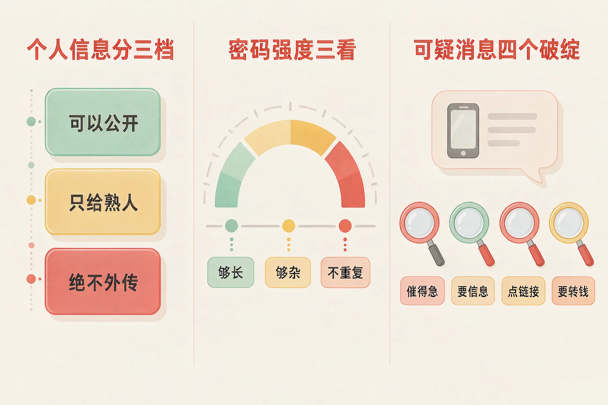
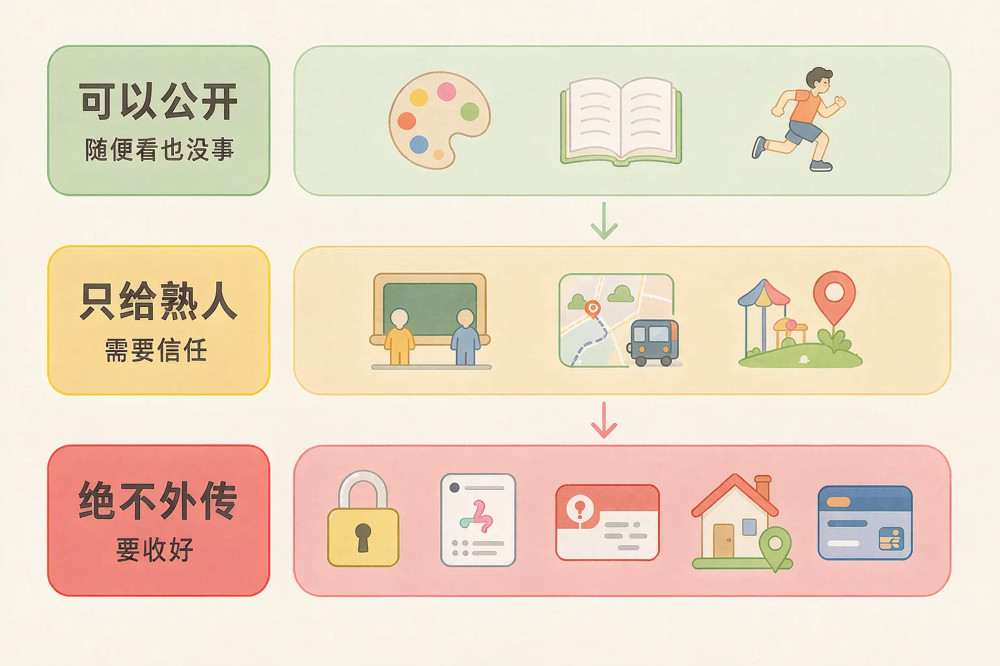
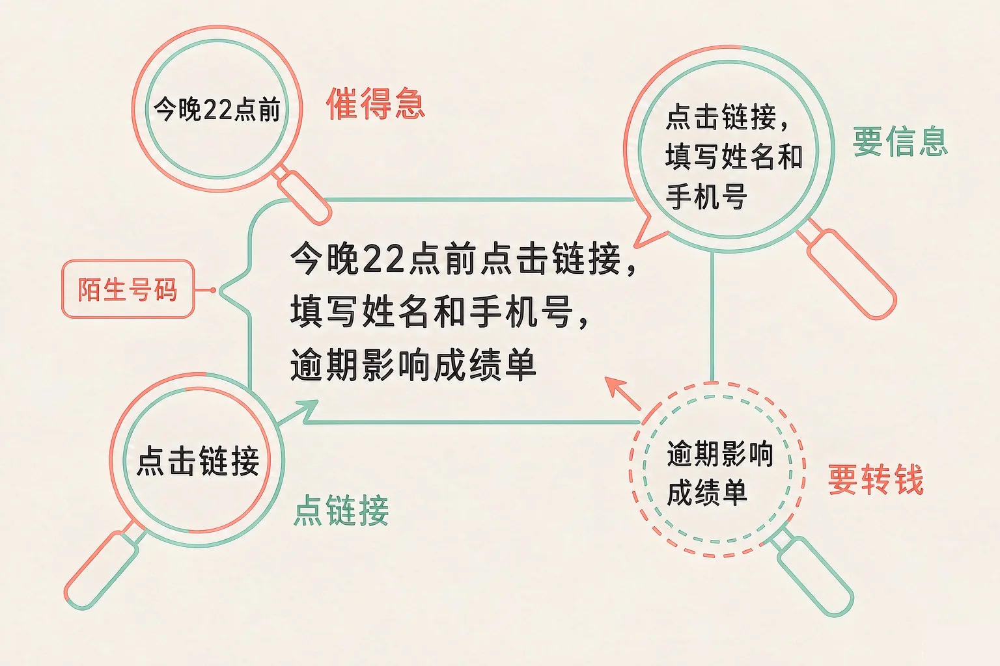

Gallery
v1.0.0 · skill v7.22.0
小学五年级 · 互联网与人工智能
一条看起来很正常、一个错别字都没有的消息，为什么可能是在骗你？

选一个你真正好奇的问题，后面的动手活动都会围着它转。
选择或输入后，这节课会围绕你的问题展开。
先凭直觉选一个，选完立刻看到解释——错了也没关系，正好知道要重点听哪里。
1. 手机上收到一条短信，说你的快递出了问题，点链接填写姓名和手机号就能重新派送。最稳妥的做法是：
要你先点链接、再填信息的陌生消息，是典型的可疑消息。自己从正规入口去查，才靠得住。错因提醒：常见错误是误认为「只是姓名和手机号，没什么大不了」。这两样正好是骗子最想先拿到的东西，靠它才能发第二条更像真的消息。
2. 下面哪一个，是绝对不能告诉别人的？
验证码是一次性钥匙，谁拿到谁就能进你的账号。喜欢什么颜色、什么运动，属于可以公开的那一档。错因提醒：容易把「熟人问的」和「可以给的」搞混。验证码不管谁问都不能给——包括自称客服、自称老师的人。
3. 关于密码，下面哪个说法是对的？
密码的强度主要看长度和字符种类，再加上「不重复使用」。生日是认识你的人第一批会试的内容。错因提醒：最常见的错误想法是「够长就行」。只要所有账号共用一个密码，其中任何一个网站出问题，其他账号会一起被打开。
为什么要学这一课？
我们每天都在网上发消息、填表格、注册账号，其实一直在交出信息（And）；可这些信息并不是一样重要的，一股脑给出去，会被人拿去冒充你、骗家里人（But）；所以要把它们分成三档，先学会哪一档绝对不能给（Therefore）。
凡是能认出你、找到你、冒充你的信息，都算个人信息。它们可以分成三档。
🟢 第一档 · 可以公开
喜欢的颜色、爱看的书、擅长的运动。别人知道了没关系。
🟡 第二档 · 只给熟人
哪个班的、走哪条路上学、周末常去哪儿。家里人知道就够了。
🔴 第三档 · 绝不外传
密码、验证码、身份证号、家庭住址、家长的银行卡号。

🔍 深层理解 换个角度再看一遍这件事，看看能不能说出背后的原理。
看见它：打开你的手机想一想：最近一周你在哪些地方填过信息？填的时候，有没有停下来想过它属于哪一档？
比较它：「我是哪个班的」和「我的身份证号」，差的不只是字面。前者最多让人知道你在这个集体里，后者可以让人拿着去冒充你。
迁移它：第三档的信息有个共同点：拿去就能当钥匙用。以后遇到要填这一类信息的地方，先问一句——它真的需要吗？
在下面敲一个密码，强度环会实时变化，体检报告会一条一条告诉你它弱在哪里。也可以点例子直接试。
还没有输入。在框里敲一个密码，或者点下面的例子试试看。
骗人的消息不管伪装成什么样，一般都逃不过下面四个破绽。

有同学认为「只要没有错别字、语气够正式、落款像官方的，就说明是真的」。恰恰相反：错别字少、语气正式、头像像老师，这些都是骗子可以刻意做出来的。真正能核实的是号码、网址这些你本来就熟悉的东西。
上面是一条消息，下面列出它的几个细节。一个细节一个细节地点开看，看完再下结论。
第 1 条消息
—
—
逐条点开细节，看完再下结论。
题目：小明收到三条消息：①同学说「明天考试范围变了，资料点这个链接下载」；②「你的账号异常，回复短信里的数字就能解锁」；③「恭喜你中了一台平板，先付 20 元运费」。请逐条判断该怎么办，并说明理由。
有同学会想：「第①条是我同学发的，肯定没问题。」可是账号是可以被冒用的——别人登上了他的号，发出来的消息看起来就是同学发的。所以第一步不是判断「像不像同学」，而是用一个另外的渠道去核实：打个电话、当面问一句。
先凭直觉选一个，选完立刻看到解释——错了也没关系，正好知道要重点听哪里。
1. 有同学说：「这条消息从头到尾没有错别字，语气也很正式，那应该是真的。」这个想法的问题在哪？
骗子完全可以把消息写得干净、正式、落款像官方。真正能核实的是发信号码和网址这些你本来就熟悉的东西。错因提醒：最常见的错误是误认为「写得像真的＝真的」。判断的依据要放在可核实的信息上，不是放在感觉上。
2. 「给账号充一次值就能解锁，快点，十分钟后就失效了」——这条消息中的破绽是什么？
限时十分钟是在制造着急，要求先充值是在要钱。两个破绽同时出现，几乎可以确定有问题。错因提醒：容易把「系统自动发的」当成可信的理由。自称是谁不重要，重要的是它要你做什么。
3. 关于验证码，下面哪句话对？
验证码用过就作废，正是这一点让它格外要紧——给出去了，账号的门就开了。错因提醒：这里最容易搞混的是「他认识我」和「他可信」。能叫出你名字、能报出你班级的人，恰恰是最需要警惕的，因为这些信息本来就容易被打听到。
下面有十二条候选说法。点一下卡片就可以选上或者取消，把你认为该写进保护清单的挑出来，再点「检查我的清单」。
先点卡片，把你认为该写进清单的条目选出来。
检查完以后想一想，说给同桌听：
十二条里有四条是不该写进清单的。它们看着像在保护你，其实会给你添麻烦。你能说清楚每一条的问题在哪里吗？
先凭直觉选一个，选完立刻看到解释——错了也没关系，正好知道要重点听哪里。
1. 你看到一个网站写着「免费领取学习礼包，只需填写姓名、学校和家长手机号」。最稳妥的做法是：
「免费」是最常见的诱饵，而要的又正好是能定位到你和你家长的信息。先弄清楚是谁办的，再决定填不填。错因提醒：这里最容易出错的是「填一部分真的没关系」。姓名加手机号已经足够让人找到你，真真假假混着填反而更乱。
2. 有人在聊天里说：「我是客服，你把收到的验证码报给我，我帮你把误扣的钱退回来。」正确做法是：
验证码不能给任何人。自己从正规入口去查，才能真正知道钱有没有被扣。错因提醒：常见错误是被「退钱」两个字吸引住了。对方越是给你好处，越要想一想：他为什么需要我的验证码？
3. 在图书馆的公共电脑上登录了自己的账号，离开前最重要的一件事是：
不退出账号，下一个用这台电脑的人打开就是你的账号。清历史记录不等于退出登录。错因提醒：容易把「清理痕迹」和「退出登录」搞混。痕迹清掉只是别人看不到你去过哪儿，账号还开着，门就还开着。
回到开头那条消息：头像像老师，不代表就是老师；没有错别字，也不代表就是真的。唯一靠得住的办法，是用另外一个渠道去核实——打个电话，或者当面问一句。
给别人讲一遍：请用「三个档次、四个破绽」这两组词，说清楚那条消息到底哪里不对劲。
再动一动手：写下来——你今天在综合任务里选中的那八条，按你最容易忘的顺序重新排一遍。
三层练习，做完第一、二层就算通关；第三层留给愿意继续探索的同学。
⭐ 基础巩固（必做）
⭐⭐ 能力应用（必做）
⭐⭐⭐ 迁移挑战（选做）
左边是学它之前要先会的，右边是学会之后可以继续探索的，下面是同一领域的伙伴知识。
图谱正在加载：首次进入需下载知识索引（约 1–3 秒），加载完成后本行会自动消失。